Модуль Tkinter определяет ряд констант якорей, которые вы можете использовать для управления позиционированием элементов относительно их контекста. Например, якоря могут указывать, где виджет находится внутри рамки, когда рамка больше виджета.
Эти константы задаются как стороны света, где север - это вверх, а запад - это слева.
Константы якорей показаны на этой диаграмме:

Например, если вы создадите небольшой виджет внутри большой рамки и используете опцию anchor=tk.SE, то виджет будет размещен в нижнем правом углу рамки. Если вы вместо этого используете anchor=tk.N, то виджет будет расположен по центру вдоль верхнего края.
Якоря также используются для определения того, где находится текст относительно опорной точки. Например, если вы используете tk.CENTER в качестве якоря текста, то текст будет центрирован по горизонтали и вертикали относительно опорной точки. Якорь tk.NW разместит текст так, чтобы опорная точка совпадала с северо-западным (верхним левым) углом прямоугольника, содержащего текст. Якорь tk.W будет центрировать текст по вертикали относительно опорной точки, с левым краем прямоугольника текста, проходящим через эту точку, и так далее.